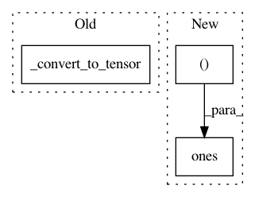

d041ccdc8112fa0d62ee9ad4ab4cecf0fd8e2cf3,torchdiffeq/_impl/misc.py,,_optimal_step_size,#Any#Any#Any#Any#Any#Any#,164
Before Change
if mean_error_ratio == 0:
return last_step * ifactor
if mean_error_ratio < 1:
dfactor = _convert_to_tensor(1, dtype=torch.float64, device=mean_error_ratio.device)
error_ratio = torch.sqrt(mean_error_ratio).to(last_step)
exponent = torch.tensor(1 / order).to(last_step)
factor = torch.max(1 / ifactor, torch.min(error_ratio**exponent / safety, 1 / dfactor))
return last_step / factor
After Change
if mean_error_ratio == 0:
return last_step * ifactor
if mean_error_ratio < 1:
dfactor = torch.ones((), dtype=last_step.dtype, device=last_step.device)
error_ratio = torch.sqrt(mean_error_ratio).type_as(last_step)
exponent = torch.tensor(order, dtype=last_step.dtype, device=last_step.device).reciprocal()
factor = torch.min(ifactor, torch.max(safety / error_ratio ** exponent, dfactor))
return last_step * factor
In pattern: SUPERPATTERN
Frequency: 3
Non-data size: 3
Instances
Project Name: rtqichen/torchdiffeq
Commit Name: d041ccdc8112fa0d62ee9ad4ab4cecf0fd8e2cf3
Time: 2020-07-25
Author: 33688385+patrick-kidger@users.noreply.github.com
File Name: torchdiffeq/_impl/misc.py
Class Name:
Method Name: _optimal_step_size
Project Name: rtqichen/torchdiffeq
Commit Name: d041ccdc8112fa0d62ee9ad4ab4cecf0fd8e2cf3
Time: 2020-07-25
Author: 33688385+patrick-kidger@users.noreply.github.com
File Name: torchdiffeq/_impl/tsit5.py
Class Name:
Method Name: _optimal_step_size
Project Name: rtqichen/torchdiffeq
Commit Name: d041ccdc8112fa0d62ee9ad4ab4cecf0fd8e2cf3
Time: 2020-07-25
Author: 33688385+patrick-kidger@users.noreply.github.com
File Name: torchdiffeq/_impl/interp.py
Class Name:
Method Name: _interp_evaluate